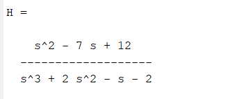

Procedures
5.1
a) Transfer Function of the system:
b) Poles and Zeros of the system:
c) Plots of pole zero map:
d) Stability of the system:
The system is stable because all the poles are in the left half plane and the impulse response returns to 0
5.2
a) Transfer Function of the system:
b) Poles and Zeros of the system:
c) Plots of pole zero map:
d) Stability of the system:
The system is unstable as the impulse response goes to infinity and the zeroes and poles are ont eh right side of the graph.
5.3
a) Transfer Function of the system:
b) Poles and Zeros of the system:
c) Plots of pole zero map:
d) Stability of the system:
This system is partially stable becasue the system stabalizes at a number other than 0.
5.4
a) Transfer Function of the system:
b) Plot and include Impulse Response:
c) Plots of pole zero map:
d) Stability of the system:
The system is stable but not assyptotically stable because the impusle return back to 1 and stays there.
5.5
a) Transfer Function of the system:
b) Impulse Response Plot:
c) Plots of pole zero map:
d) Stability of the system:
The system is asymptotically stable because the impulse response returns to 0.
5.6
a) Transfer Function of the system:

b) Impulse Response:
c) Plots of pole zero map:
d) Stability of the system:
The system stability is unstable because the impulse graph goes to infinity when and does not return to 0.
5.7
Transfer Function of the circuit:
5.8
a) Impulse Response Plot
b) Step Response Plot
5.9
a) Poles and Zeroes Found
b) poles zero map
c) Is the system asymptotically stable, stable, or unstable? Why?
5.10
As the resistance value increases, the number of oscillations decreases. Additonally, the magnitude fo the poles and zeroes increase
5.11
a) Poles and Zeroes
b) Impulse Response
5.12
Equation written in the form form equation (3):
H(s) = (s-4)(s-3) / (s+1-i)(s+1+i)(s-1)
5.13
a)Pole-Zero cancellation in the form of Equation 3
H(s) = (s-4)(s-3) / (1-i)(1+i)
b)Pole-Zero cancellation in transfer function form
c)Impulse of New system
d)Stable or Unstable? Is this expected?
The new system is stable because the unstable point was removed from the equation meaning the impulse will now be able to return to 0. This is expected as removing an unstable point would logically make the system stable unless it had more usntable points